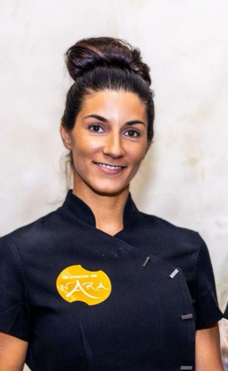

Masajes
Relajantes, deportivos, drenaje linfatico, reflexologia, piedras volcanicas, bambu y pindas. Cada sesion se adapta a lo que tu cuerpo necesita.
Ver masajes
Masajes terapeuticos, osteopatia, tecnica craneo sacral, maderoterapia, yoga y nutricion holistica. Atencion profesional, individualizada y con enfoque integral en el corazon de Soria.

En Manos de Nara es un centro de bienestar y osteopatia en Soria donde el cuidado del cuerpo, la escucha y el acompanamiento consciente son el eje de cada sesion.
Fundado en 2012 por Marien Garcia Tutor, el centro aplica tecnicas holisticas con un enfoque integral: cada persona recibe una atencion adaptada a su situacion y necesidades reales.
Cada terapia responde a una necesidad real. Desde el masaje manual hasta la nutricion holistica, todo se integra para cuidar cuerpo, mente y espiritu.
Relajantes, deportivos, drenaje linfatico, reflexologia, piedras volcanicas, bambu y pindas. Cada sesion se adapta a lo que tu cuerpo necesita.
Ver masajesTrabajo estructural, craneal y visceral para aliviar las alteraciones de movilidad que afectan a tu organismo.
Ver osteopatiaTecnica sutil e indolora que equilibra el organismo a nivel fisico, energetico y emocional. Especialmente eficaz en bebes.
Ver craneo sacralTecnica ancestral con utensilios de madera que estimula la circulacion, tonifica y mejora la apariencia de la piel.
Ver maderoterapiaPresion neumatica que activa los sistemas linfatico y circulatorio, reduce la celulitis y alivia piernas cansadas.
Ver presoterapiaAuriculoterapia, aromaterapia, fitoterapia y mas. La persona como un todo: cuerpo, mente y espiritu en equilibrio.
Ver tecnicasAsesoramiento nutricional personalizado con enfoque naturopata para mejorar habitos y calidad de vida.
Ver nutricionCosmetica vegana y 100% natural con productos Ringana. Limpieza profunda que respeta y equilibra tu piel.
Ver limpieza facialHatha yoga en grupos reducidos: asanas, respiracion y meditacion para el equilibrio de cuerpo y mente.
Ver yogaVemos a la persona como un todo. El cuidado del cuerpo, la escucha y el acompanamiento consciente son el centro de nuestro trabajo.
Cada sesion parte de la escucha activa y la valoracion individual. No hay tratamientos genericos: hay personas con necesidades reales.
Valoramos tu estado fisico, emocional y tus habitos para entender la raiz de lo que necesitas resolver.
Aplicamos la tecnica o combinacion de tecnicas mas adecuada a tu caso, siempre con atencion individualizada.
Acompanamos tu evolucion y ajustamos el plan terapeutico para que los resultados sean duraderos.

No hace falta diagnostico previo. En la primera cita realizamos una valoracion completa para determinar el enfoque mas adecuado a tus necesidades.
Puedes pedir cita por telefono, WhatsApp o a traves de nuestro sistema de reservas online. Tambien ofrecemos servicio a domicilio en Formigal y alrededores.
Ofrecemos masajes relajantes con aceites esenciales, masaje deportivo, drenaje linfatico manual (metodo Vodder), masaje con piedras volcanicas, con canas de bambu, con pindas herbales, reflexologia podal, masaje anticelulitico y ventosas (cupping). Cada sesion se adapta a tus necesidades.
No es imprescindible. En la primera sesion realizamos una valoracion completa para determinar el enfoque mas adecuado. Nuestras tecnicas naturales complementan, pero no sustituyen, el tratamiento medico convencional.
Si. Es especialmente eficaz en los primeros seis meses de vida, ayudando con colicos, regurgitaciones, problemas de succion, asimetrias craneales y torticolis congenita. Es sutil, indolora y segura.
Estamos en la C. Antonio Segura Zubizarreta 6, Bajo, 42004 Soria. Puedes pedir cita llamando al 659 20 76 29, por WhatsApp o a traves de nuestro sistema de reservas online.
Si. Ofrecemos servicio a domicilio en Formigal y alrededores. Contacta con nosotros para coordinar horarios y disponibilidad.
Marien Garcia Tutor es especialista en quiromasaje, osteopatia integral, cuenta con un Master en Terapias Manuales y Complementarias y es Tecnico Superior en Dietetica y Nutricion. Formacion acreditada por ISED, ITEP y SETSS.
Estamos en el centro de Soria, en la calle Antonio Segura Zubizarreta. Pide cita y empieza a cuidarte.